\(\renewcommand{\AA}{\text{Å}}\)
10.1.2. Visualize LAMMPS snapshots
Snapshots from LAMMPS simulations can be viewed, visualized, and analyzed in a variety of ways.
LAMMPS snapshots are created by the dump command, which
can create files in several formats. The native LAMMPS dump format is a
text file (see dump atom or dump custom) which can
be visualized by several visualization tools for MD simulation trajectories.
OVITO and VMD seem to be the most popular
choices among them.
The dump image and dump movie
styles can output internally rendered images or convert them to a movie
during the MD run. It is also possible to create visualizations from
LAMMPS inputs or restart file with LAMMPS-GUI, which uses the dump image command internally. If the LAMMPS input already contains
a dump image command, the resulting images will be
noted by LAMMPS-GUI and can be viewed and animated directly in the
Slide Show dialog. The images can be transformed (i.e. scaled,
mirrored, or rotated) and exported into a video, too. The Image
Viewer dialog in LAMMPS-GUI can be used to visualize the current
system, adjust a variety of visualization settings quasi-interactively
from the GUI.
Programs included with LAMMPS as auxiliary tools can convert between LAMMPS format files and other formats so they can be read by certain programs. See the Tools page for details. These are rarely needed these days.
10.1.3. Basic workflow for loading LAMMPS trajectories in VMD
VMD can read native LAMMPS dump files (in text format not binary) and
several other dump styles. The native LAMMPS format is preferred since
it contains simulation box information. VMD does not support reading
data files directly, but the TopoTools plugin does. This
step is usually necessary, since the LAMMPS dump files do not contain
information about the molecular topology and elements and that
information can be obtained from the data file. There also is the
pbctools plugin that can be
used for “repairing” bonds that are broken because one of its atom
passed through a periodic boundary. Because of using the plugins, the
following commands need to be typed into the VMD console to read a
trajectory. The following commands are based on the peptide example
to which the command dump 1 all atom 10 dump.peptide was added.
Note the use of the group “all” in contrast to the commented out dump
commands that use the group “peptide”. This is to match the number of
atoms in the data file. VMD does not support cases where the number of
atoms change or you are trying to read in a subset of a system unless
all files contain the same subset.
# load data file including its coordinates
topo readlammpsdata data.peptide full
# atom style full is the default ^^^^ and can be omitted
# try to infer missing atom properties from available information
topo guessatom lammps data
# now add one of more dump files
mol addfile dump.peptide type lammpstrj waitfor all
# we tell VMD which file type ^^^^^^^^^ if the filename does not end in .lammpstrj
# jump to the first frame with the data file coordinates
animate goto 0
# if needed use the following command to try and repair broken bonds
# pbc join fragment -now
# unwrap the entire trajectory to repair all broken bonds
# this is faster and more accurate than running `pbc join` for all frames
pbc unwrap -all
pbc wrap -all -compound fragment -orthorhombic
# remove for triclinic box ^^^^^^^^^^^^^
# delete the coordinate frame from the data file
animate delete beg 0 end 0 top
# write out the topology information without coordinates to a PSF file
animate write psf peptide.psf top
# and the processed trajectory data to a DCD file for future use
animate write dcd peptide.dcd top waitfor all
###############################################################
# the steps up to this line only need to be run once
###############################################################
# set visualization defaults
display perspective orthographic
mol default style Licorice
mol default material Diffuse
display backgroundgradient on
# delete molecule and load psf and dcd file
mol delete top
mol new peptide.psf
mol addfile peptide.dcd waitfor all
pbc box
To automate this process, you can also save these commands to a file,
e.g. peptide.vmd and then load this file from the VMD “File” menu
with “Load Visualization State…” or type in the command console
play peptide.vmd.
10.1.4. Advanced graphics features in the dump image command
Added in version 11Feb2026.
The following paragraphs discuss some of the more advanced features in the dump image command in LAMMPS with the help of some input file examples. For exact details of keywords and arguments, please refer to the detailed documentation of the respective commands.
Please note that many of these features were added or significantly updated after LAMMPS version 10 Dec 2025 and well into the 2026 stable version development cycle. If you are using an older version of LAMMPS, these examples may likely cause errors or look differently.
Complete example inputs
The discussions below only quote relevant sections of input files to
show specifically the commands used in the visualizations. There are
complete example files in the examples/GRAPHICS folder of the LAMMPS
source code distribution.
Image quality and resolution
The image resolution is determined by the size keyword. The default setting is to create images with 512x512 pixels. This is rather low resolution. A typical (non-“retina”) computer screen at the time of writing this howto has about 100 dpi (= dots per inch) so that this image covers an area of a bit over 5x5 inches (or about 135x135 millimeters). Images for use in presentations, posters, or publications should generally be generated at larger sizes. When the image is meant for printing, one has to consider that a printer may have a resolution of 300 dpi or even 600 dpi which means that images should be created 3x3 or 6x6 times larger to utilize the full resolution of the printer and show as much details and be as clean as possible. Otherwise images have to be scaled up which can make them look blurry and with ragged edges.
The keywords fsaa and ssao can be used to further improve the image quality at the expense of significant additional computational cost to render the images:
FSAA stands for Full Scene Anti-Aliasing and means in the case of LAMMPS that the image is rendered at four times the size (double the width and double the height) and then the pixels in the final image are computed by taking the average of 2x2 pixel groups. This will result in smoother, less ragged edges of objects in the image.
SSAO stands for Screen Space Ambient Occlusion and is an image enhancement technique that uses intermediate image data (like the information of how close or far away a pixel is to the camera and its neighboring pixels) and brightens or darkens randomly selected pixels in its neighborhood based on that information. This enhances the depth perception of objects in an image.
Both methods are complementary and thus can be combined for additional improvement of the image quality. The images below show from left to right the same excerpt of a dump image output with the default settings, with fsaa enabled, with ssao enabled, and with both features enabled.
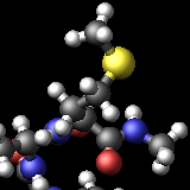 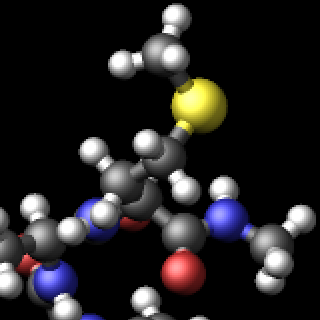 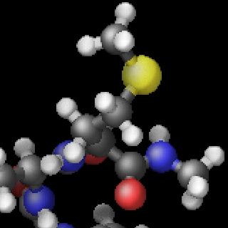 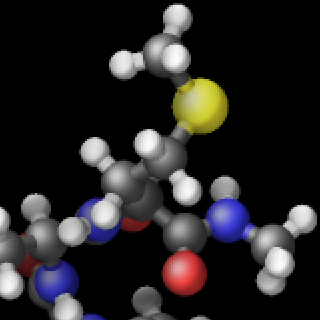
{kind=link}
{kind=link}
{kind=link}
{kind=link}
The computational cost to create the images with dump image depends on the image size, the number of objects to be rendered (this number can grow quickly when using fine triangle meshes), and the choice of the fsaa and ssao settings. For high resolution images, a correspondingly large image size has to be chosen.
Since the simulation has to wait for the dump image command to complete its image rendering, creating high resolution, high quality images can slow down a simulation significantly with frequent output of images. On the other hand, the image rasterizer in LAMMPS is fairly simple and thus fast compared to more advanced image generation tools like ray tracers. The method it uses to generate the images allows to have each MPI process create image data for the atoms and objects they “own” and then this image data is merged for the final output with a procedure that has O(log(N)) complexity with the number of MPI processes. At the moment there is no GPU acceleration and only limited multi-threading parallelization available (e.g. for SSAO post-processing of image data).
Color selection and color management
The dump image command in LAMMPS has a variety of options to assign colors to the rendered graphics. In most cases the color is assigned to atom (or bond) types and uses a default map with six colors as follows:
type 1 = red
type 2 = forestgreen
type 3 = blue
type 4 = gold
type 5 = cyan
type 6 = magenta
type 7 = silver
type 8 = orange
type 9 = lime
type 10 = gray
type 11 = darkred
type 12 = darkgreen
type 13 = darkblue
type 14 = darkcyan
type 15 = darkmagenta
type 16 = darkgray
and repeats itself for types > 16. The default color sequence is thus:
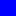

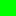
This mapping can be changed by the “dump_modify acolor” command, though. If you want to change the color of a specific atom type, you can use dump modify acolor. For example to color atoms of type 1 in gray and type 2 in white, you would use:
dump_modify img acolor 1 gray acolor 2 white
There are 140 predefined colors, but you can add new colors or modify existing ones, too, with the dump_modify color keyword. The color keyword is followed by the name of the color and the intensity of the red, green, and blue components (R/G/B) in a range from 0.0 to 1.0. Here is an example to create eight new color names followed by the acolor keyword with a wildcard to replace the default map of six atom colors with a new map of the eight newly defined colors.
dump_modify viz color map1 0.012 0.016 0.322 color map2 0.008 0.243 0.541 &
color map3 0 0.467 0.714 color map4 0 0.588 0.780 color map5 0 0.706 0.847 &
color map6 0.282 0.792 0.894 color map7 0.565 0.878 0.937 color map8 0.792 0.941 0.973 &
acolor * map1/map2/map3/map4/map5/map6/map7/map8
Yet another option is to color the atoms by element. The per-element
colors are predefined but LAMMPS does not know which element an atom
type corresponds to and by default uses carbon for all atom types. The
correct element information needs to be provided with a dump_modify
element command followed by an element name for each atom type. In case
of the peptide example bundled with LAMMPS this would be:
dump viz peptide image 1000 image-*.png element type size 600 600 zoom 2.0
dump_modify viz element C C O H N C C C O H H S O H
Finally, atoms can be colored by the value of a per-atom property using
a color map. There are several variants of color maps. Here is a
simple example coloring the atoms in the peptide example by their
charge with a continuous color map where white is neutral, red positive,
blue negative, and the color intensity corresponds to the magnitude of
the charge:
dump viz peptide image 1000 image-*.png q type size 600 600 zoom 2.0
dump_modify viz amap -1.0 1.0 ca 0 3 min blue 0.0 white max red
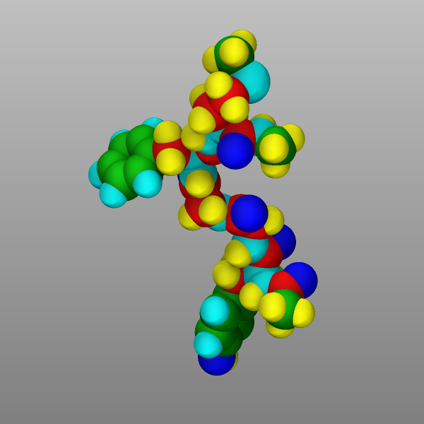 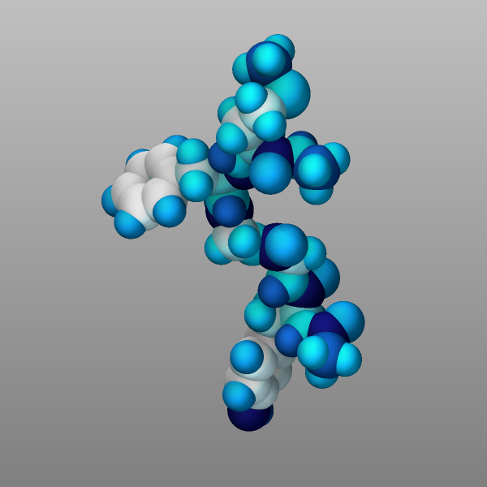 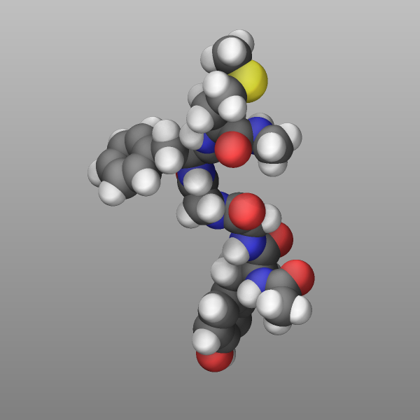 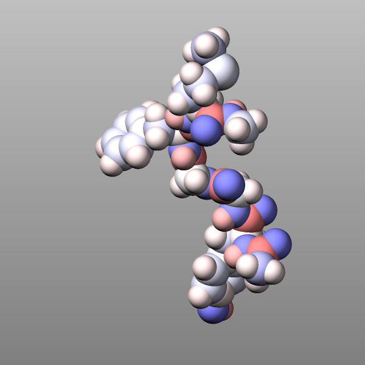
{kind=link}
{kind=link}
{kind=link}
{kind=link}
Changed in version 4Jul2026.
Similar color selections are available for coloring bonds. The available options are: type, atom, c_ID (or c_ID[I]), and none. With type the bonds are colored by having a color assigned to each bond type which follows the same color sequence as for atoms but can be set for each bond type independent from atom types. When using the atom selection the bond color follows the color of the atoms. Bonds are drawn in two pieces as a cylinder from the center of the bond to each of the atoms. Thus if two atoms have different color, the bond also as two parts with different colors with this setting. If the a compute reference is used (e.g. c_ID or c_ID[I]) the bond color is taken from a colormap and the color depends on the value of the compute for the given bond. An input example for coloring bonds by the force magnitude is given below. When the bond color argument is none, no bonds are drawn.
compute bforce peptide bond/local force
dump viz peptide image 100 myimage-*.png element type bond c_bforce type
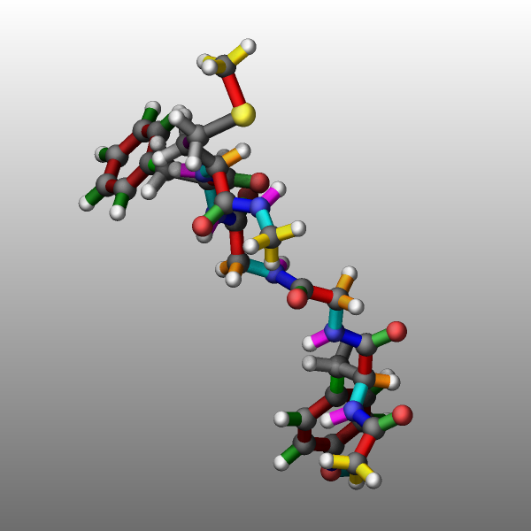 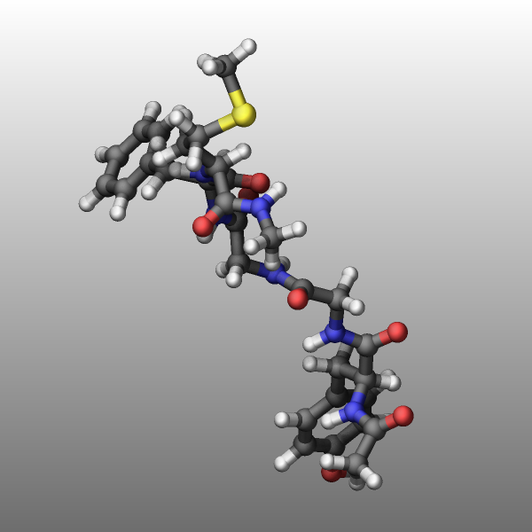 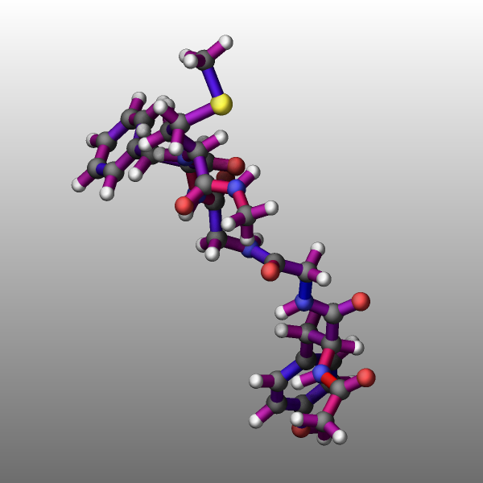 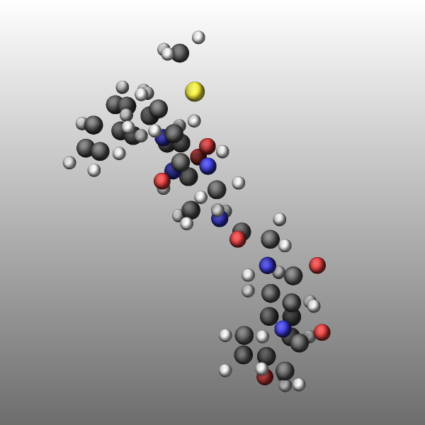
{kind=link}
{kind=link}
{kind=link}
{kind=link}
Transparency
It is now possible to create approximately transparent graphics objects using an ordered dithering algorithm which results in a so-called screen-door transparency effect. In essence, for a transparent object only a part of the pixels are drawn and thus exposing any object behind the transparent object where drawing the pixels is skipped. LAMMPS employs a 16x16 Bayer matrix pattern that leads to rather regular patterns. A benefit of this approach is that it does not add extra cost to the rendering and for a 25%, 50%, and 75% transparency setting, there are no visible pixel patterns when also FSAA is enabled. In this case each pixel is the average of a 2x2 block of pixels in an image of double the width and height, and thus the transparent object will contribute 3, 2, or 1 pixels to the 2x2 block which is averaged.
Transparency is typically - like the color of objects - associated with an atom type and can be modified through the dump_modify atrans command and specified as an opacity ratio, i.e. a number between 0 (fully transparent) and 1 (fully opaque). Other choices are available and described in the documentation page.
{kind=link}
{kind=link}
Creating and viewing animated GIFs and movie files
A series of JPEG, PNG, or PPM images can be converted into a movie file
and then played as a movie using commonly available tools. Using dump
style movie automates this step and avoids the intermediate step of
writing (many) image snapshot file. But LAMMPS has to be compiled with
-DLAMMPS_FFMPEG and a compatible FFmpeg executable has to be
installed. When using LAMMPS-GUI to
run LAMMPS, you can run the simulation and LAMMPS-GUI will automatically
show the created images in its Slideshow Viewer dialog. From there
you can animate or single step through them and also export them to a
movie file via FFMpeg.
To manually convert JPEG, PNG or PPM files into an animated GIF or MPEG or other movie file you can use:
Use the ImageMagick
convertprogram (calledmagickin recent versions).convert *.jpg foo.gif convert -loop 1 *.ppm foo.mpg
Animated GIF files from ImageMagick are not optimized. You can use a program like gifsicle to optimize and thus massively shrink them. MPEG files created by ImageMagick are in MPEG-1 format with a rather inefficient compression and low quality compared to more modern compression styles like MPEG-4, H.264, VP8, VP9, H.265 and so on.
Use QuickTime.
Select “Open Image Sequence” under the File menu Load the images into QuickTime to animate them Select “Export” under the File menu Save the movie as a QuickTime movie (*.mov) or in another format. QuickTime can generate very high quality and efficiently compressed movie files. Some of the supported formats require to buy a license and some are not readable on all platforms until specific runtime libraries are installed.
Use FFmpeg
FFMpeg is a command-line tool that is available on many platforms and allows extremely flexible encoding and decoding of movies.
cat snap.*.jpg | ffmpeg -y -f image2pipe -c:v mjpeg -i - -b:v 2000k movie.m4v cat snap.*.ppm | ffmpeg -y -f image2pipe -c:v ppm -i - -b:v 2400k movie.mp4
Front ends for FFmpeg exist for multiple platforms. For more information see the FFmpeg homepage
Play the movie:
Use your web browser to view an animated GIF or MP4 movie format movie.
Select “Open File” under the File menu Load the animated GIF or MP4 movie file
Use the freely available VideoLAN media player (vlc) or FFMpeg player tool (ffplay) to view a movie.
Both are available for multiple operating systems and support a large variety of file formats and decoders. There are plenty more media player packages available on the different operating systems.
vlc foo.mpg ffplay bar.avi
Use the Pizza.py animate tool, which works directly on a series of image files.
a = animate("foo*.jpg")
QuickTime and other Windows- or macOS-based media players can obviously play movie files directly. Similarly for corresponding tools bundled with Linux desktop environments. However, due to licensing issues with some file formats, the formats may require installing additional libraries, purchasing a license, or may not be supported.
Prototyping dump image visualizations with LAMMPS-GUI
One of the challenges when using dump image for creating visualizations compared to the likes of OVITO and VMD is that it is non-interactive and it can be tedious and time consuming to find suitable settings for camera view or zoom factor and others for a specific system. You would have to run LAMMPS to create an image, then view it in an image viewer program, edit the input file and repeat the process until you have found settings that you like.
This process can be streamlined with LAMMPS-GUI, which does not contain its own visualization code, but rather uses dump image through the LAMMPS C-language library interface and displays the resulting images for its Image Viewer Dialog. Through the GUI elements and dialogs many settings can be adjusted and then the image will be recreated with the updated settings and thus allowing to refine a visualization in a quasi-interactive fashion. The resulting command lines can be transferred to the cut-n-paste buffer of the windowing system and pasted into the input file and then further adjusted.
Once the input contains a dump image command, LAMMPS-GUI notices when a new image has been created and loads it into the “Slide Show Dialog”. This streamlines the process of building more complex visualizations once you have copied an initial draft created with the “Image Viewer Dialog” into the input since you have editor and image viewer as part of the same program and can quickly start and stop LAMMPS with a mouse click or keystroke. A large part of the visualization examples shown in this Howto page have been created this way.
{kind=link}
{kind=link}
{kind=link}
Visualizing systems using potentials with implicit bonds
There are several pair styles available in LAMMPS where the bond information is not taken from the bond topology in a data file but the potentials first determine a “bond-order” parameter for pairs of atoms and - depending on the value of that parameter - apply forces for bonded interactions. This applies to ReaxFF, REBO and AIREBO, BOP, and several others pair styles. These implicit bonds will not be shown by dump image since its mechanism for displaying bonds relies on explicit bonds being present in the bond topology.
One can hide the fact that there are no bonds by setting the atom radii to the covalent radii of the corresponding elements (see leftmost example image below). This will result in a representation often labeled as “VDW” in popular visualization tools. Otherwise, there are currently three approaches to make those bonds visible.
Access the (internal) bond order information from the pair style through a custom fix and then use the fix keyword of the dump image command to use the graphics objects information provided by the fix to visualize the bonds (see below for more information). That includes bonds that are broken and formed. This is the most accurate option since it uses the data that is used by the computation of the model. This is currently only available for ReaxFF by using fix reaxff/bonds.
Use the autobond keyword of dump image to approximate the bonds based on a simple distance heuristic. This is similar to the Dynamic Bonds representation in VMD. How accurate this option will be depends on the complexity of the system and how many different bond lengths there are. For the simple water system shown below, there are no significant differences, since there is only one type of bond (between oxygen and hydrogen). The autobond keyword uses on top of the distance cutoff between atoms, the heuristic that no bonds will be drawn between two hydrogen atoms and thus bogus bonds are avoided when using a larger bond cutoff (e.g. suitable for carbon-carbon bonds) which is larger than the typical hydrogen-hydrogen distance for hydrogen atoms bound to the same atom (e.g. in water, methane or hydrocarbon chains).
Use a combination of fix bond/break and fix bond/create/angle with bond style zero to dynamically create and remove bonds that do not add any forces. This also requires to tell the neighbor list code to not treat any pairs of atoms as special neighbors (otherwise the corresponding pairs of atoms could be excluded from the neighbor list and thus the forces computed by the pair style incorrect) through using the special_bonds command. Unlike the two other options, which were added more recently, this method also works with older versions of LAMMPS. Here is an example of the necessary commands for a carbon nanotube modeled with the AIREBO potential:
bond_style zero bond_coeff 1 1.4 special_bonds lj/coul 1.0 1.0 1.0 fix break all bond/break 1000 1 2.5 fix form all bond/create/angle 1000 1 1 2.0 1 aconstrain 90.0 180
This “graphics hack” was originally posted as part of the LAMMPS tutorial at https://lammpstutorials.github.io/sphinx/build/html/tutorial2/breaking-a-carbon-nanotube.html
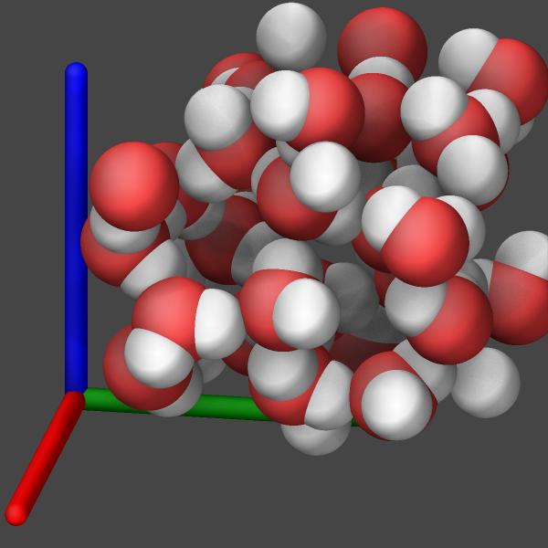 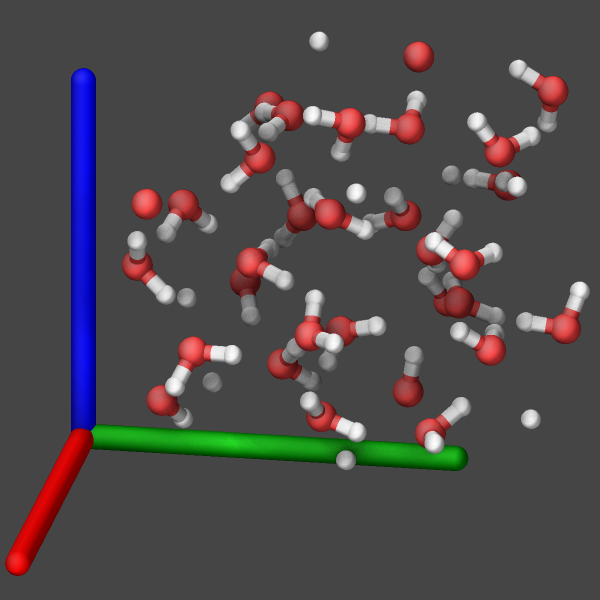 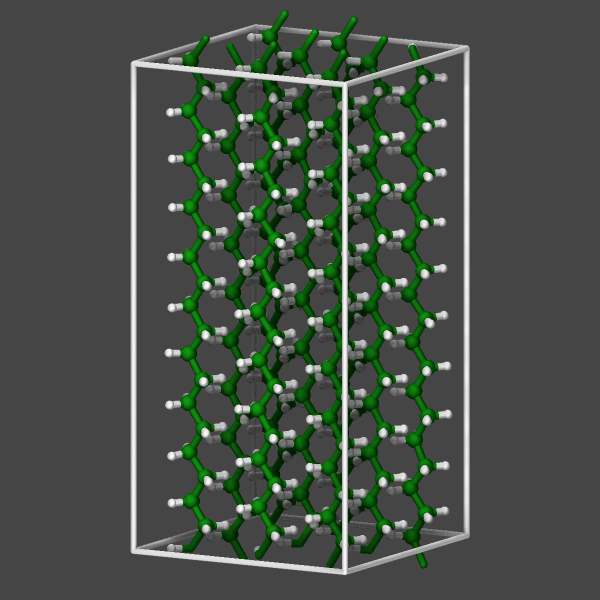 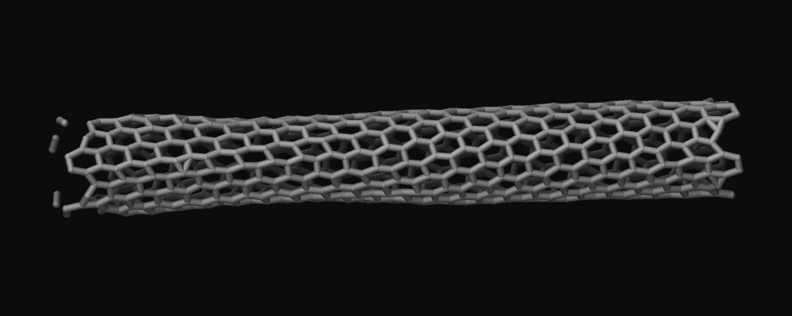
{kind=link}
{kind=link}
{kind=link}
{kind=link}
Visualizing body particles
Body particles are objects formed from either a collection of spherical particles, polygons (in 2d), or polyhedra (in 3d) formed from triangular or quadrilateral surfaces. The regular dump command can only output the center of those bodies (and their orientation), which complicates the visualization with external tools. In addition, the position of the constituent particles of nparticles bodies or the positions of the vertices of rounded/polygon or rounded/polyhedron bodies, which can be computed with compute body/local and output with dump local.
As an alternative, the bodies can be visualized directly with dump image using the body keyword. Without the body keyword the body particles would be visualized like atoms as single spheres. The color and transparency settings can be changed by settings those properties for the corresponding atom types. It is also possible to represent the bodies as either wireframes (bflag1 value 2), planar faces (bflag1 value 1), or both (bflag1 value 3).
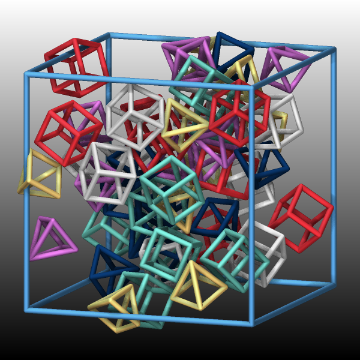 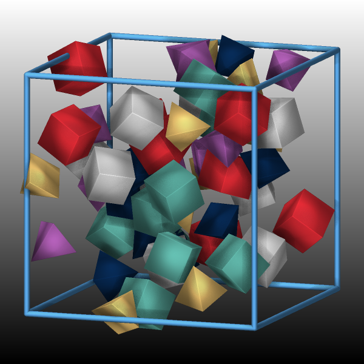 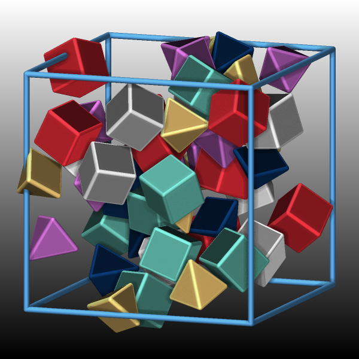
{kind=link}
{kind=link}
{kind=link}
Visualizing ellipsoid and superellipsoid particles
Added in version 11Feb2026.
Ellipsoidal particles are a generalization of spheres that may have three different radii to define the shape. Superellipsoids are in turn a generalization of ellipsoids. They can be modeled using pair styles like gayberne or resquared. The regular dump custom command can output the center of those bodies, the shape parameters and the orientation as quaternions. If one follows the required conventions and follows the documented steps, those trajectory dump files can be imported and visualized in OVITO
Changed in version 30Mar2026: Now uses curved triangles instead of flat ones; “both” option is removed; support for superellipsoids was added
As an alternative, the ellipsoid and superellipsoid particles can be visualized directly with dump image using the ellipsoid keyword. The color and transparency settings can be changed by setting those properties for the corresponding atom types. It is also possible to represent the ellipsoids via generating a triangle mesh and visualizing it as either wireframes (eflag value 2) or rounded triangle faces (eflag value 1). The use of a triangle mesh is currently required since the rasterizer built into LAMMPS does not offer suitable graphics primitives for ellipsoids or superellipsoids. The mesh is constructed by iteratively refining a triangle mesh representing an icosahedron, where each triangle is replaced by four triangles in each iteration. For a smooth representation a refinement level of 4 seems sufficient, but high resolution images may benefit from a higher level (maximum is 6, see example images below). A high refinement level can cause a significant slowdown of the rendering of the image due to the large number of triangles that need to be computed and drawn. This slowdown will be more pronounced when enabling FSAA or SSAO or both.
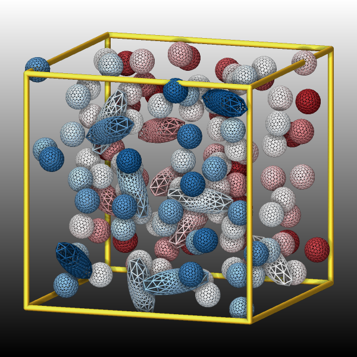 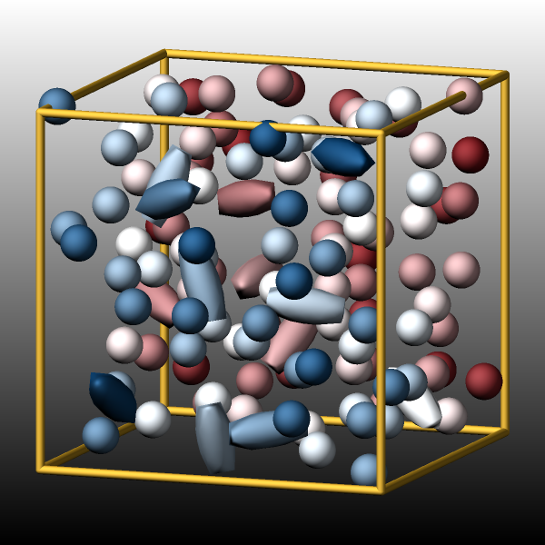 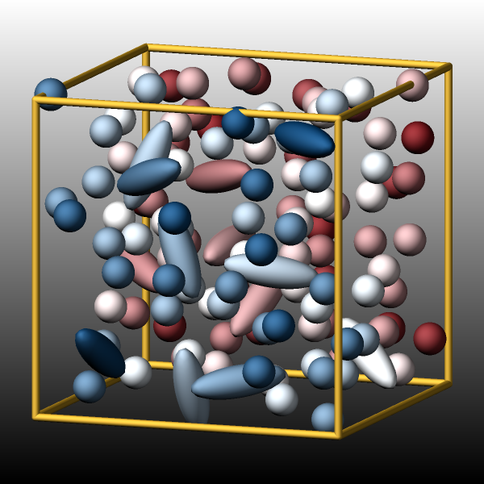
{kind=link}
{kind=link}
{kind=link}
{kind=link}
These images were created by adding the following dump image and dump_modify
commands to the in.ellipse.resquared input example:
# change /V\ this
dump viz all image 1000 image-*.png x type ellipsoid atom 1 4 0.2 &
size 600 600 zoom 1.331 view 80 20 box yes 0.025 shiny 0.2 fsaa yes
dump_modify viz pad 6 boxcolor goldenrod backcolor black backcolor2 white &
color map1 0.459 0.055 0.075 color map2 0.000 0.227 0.427 &
amap min max cf 0.0 5 min map1 0.1 map1 0.5 white 0.9 map2 max map2
Added in version 30Mar2026.
The visualization of superellipsoids works exactly the same way as for
ellipsoids by creating a triangle mesh of an icosahedron and refining
and deforming it. The difference is merely internally the applied
deformation function and the corresponding computation of the surface
normals. LAMMPS will auto-detect which function to use. Some
visualizations of the in.drop_test, the in.bowling, and the
in.super_table examples from the
examples/ASPHERE/superellipsoid_gran folder are shown below.
{kind=link}
{kind=link}
{kind=link}
Visualizing regions
Since there are several commands that operate on atoms within a specific region , it can be helpful to visualize the extent of those regions, either for debugging the command settings or for visualizing the production simulation. This is even more useful when regions are (dynamically) translated or rotated or both with the rotate or move keyword of the region command. The dump image region keyword can be used to enable such visualizations. There are currently four different draw styles available:
filled: a mesh of triangles is constructed for the surface of the region and then drawn in the selected color. This draw style accounts for the open keyword of the region command and only draws the faces of a region that are closed.
transparent: this is the same visualization as draw style filled, but in addition one can set the transparency of that visualization through an opacity parameter in the range of 0.0 (invisible) to 1.0 (fully opaque).
frame: uses the same mesh of triangles as the two styles above above, but renders the region’s surface as a wireframe mesh with a given cylinder diameter.
points: generates a cloud of random points inside the simulation box and then only draws a point as a sphere with the given color and radius if it is located inside the region. This is useful to check the impact of the side in/out setting of a region, and complementary to the other three draw styles, which only show the region surfaces. For visualization purposes any open faces of a region are ignored, since a region with an open face matches all particles.
It can sometimes be convenient to draw the same region with multiple draw styles as can be seen from the example visualization images below.
Notes on the visualization of individual region styles:
plane: since in theory planes extend infinitely, some form of boundary has to be established for the visualization. Therefore a mesh of triangles is constructed and transformed according to the region settings and then only those triangles are drawn, where at least one corner is inside the simulation box. For draw style points the side in/out setting determines on which side of the plane the points are drawn.
cone and cylinder: use triangle meshes for draw styles filled and transparent since there are no equivalent primitives (the cylinder primitive only draws half of the cylinder, since it is optimized for being capped). For draw style frame, only the rim of the top or bottom is drawn and the side is represented by lines from the top to the bottom.
box and prism: for draw style frame only the edges of the region are shown; for draw styles filled and transparent, the faces are drawn instead, but only if they are not set as “open” in the region command.
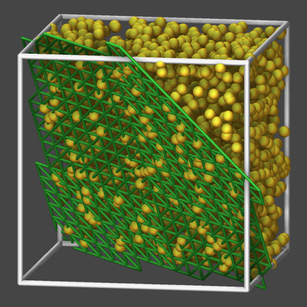 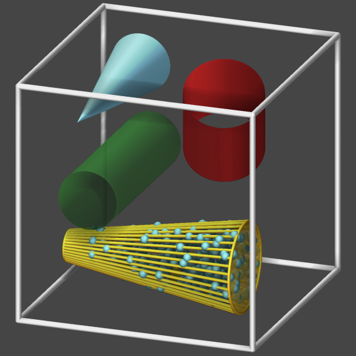 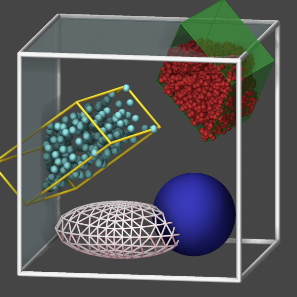
{kind=link}
{kind=link}
{kind=link}
Below is an example input deck for visualizing cone and cylinder regions:
region box block -2 2 -2 2 -2 2
create_box 0 box
variable rot equal PI*step/1000.0
region c1 cylinder x -1.0 0.0 0.5 -1.5 1.5 open 1 open 2
region c2 cone y 1.0 -1.0 0.25 0.75 -1.5 1.5 open 3
region c3 cylinder z 0.0 1.0 0.66 -0.1 1.5 open 1 open 2 rotate v_rot 0.3 0.0 0.3 0.0 1.0 1.0
region c4 cone x -1.0 1.5 0.5 0.0 -1.0 2.0
dump viz all image 100 image-*.png type type size 600 600 zoom 1.4 shiny 0.1 view 70 20 &
box yes 0.025 axes no 0.0 0.0 fsaa yes ssao yes 314123 0.7 &
region c1 forestgreen transparent 0.5 &
region c2 goldenrod frame 0.05 &
region c2 cadetblue points 10000 0.15 &
region c2 goldenrod transparent 0.5 &
region c3 firebrick filled &
region c4 skyblue filled
dump_modify viz pad 4 boxcolor silver backcolor darkgray
run 500
Visualizing graphics provided by compute or fix commands
LAMMPS can display additional graphics objects in the dump image output that are added by compute or fix styles. These fall in two categories: fixes that were written with the specific purpose of adding graphics to the visualization and computes or fixes that make objects or data visible that they maintain internally. Examples for the latter case are visualizing the indenter object from fix indent or the wall position from one of the wall fixes. The details of what kind of graphics is added and how it can be configured is described in a section titled Dump image info in the documentation of the individual fix commands.
Below is a table with links to the documentation of supported compute and fix styles:
There is no support for fix wall/region and fix wall/gran/region, since regions can be visualized with the region keyword of dump image (see discussion above).
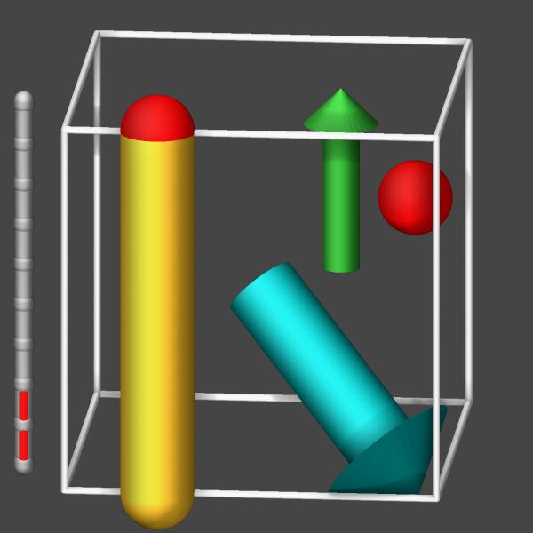 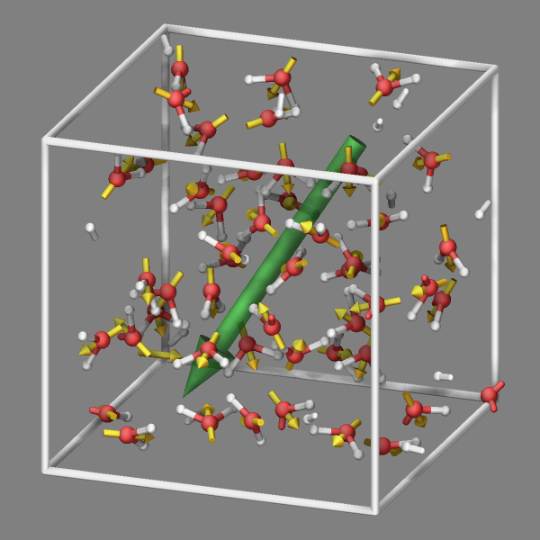 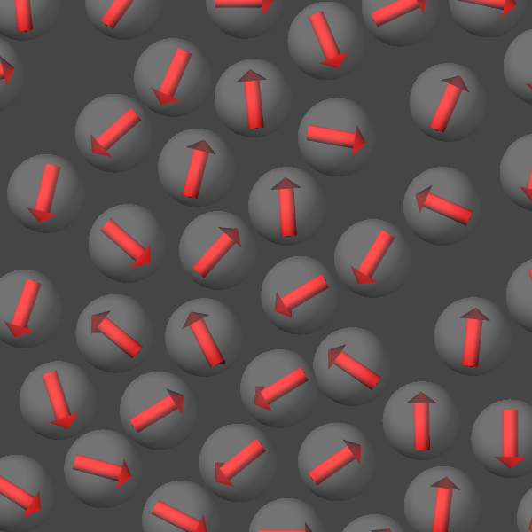 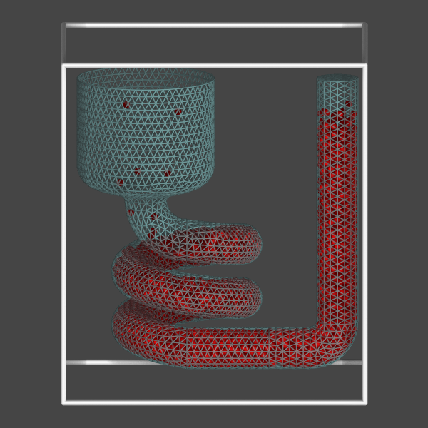 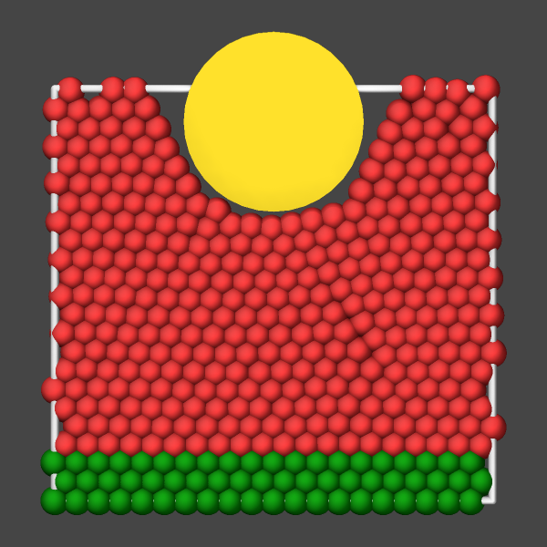
{kind=link}
{kind=link}
{kind=link}
{kind=link}
{kind=link}
Below are discussions about some aspects of specific fix commands and some input examples.
Fix graphics/objects
Fix graphics/objects adds some graphics primitives and more complex objects like a progress bar to the visualization where properties of the object(s) are controlled by equal-style or compatible variables.
Fix graphics/labels
Fix graphics/labels adds graphics from pixmaps to the visualization. These can be either images or text that is rendered internally into a pixmap with a background and a frame. Those pixmaps can be scaled, moved, made transparent, and updated during the simulation and then integrated into the dump image output. In both cases a “transparency” color can be chosen to skip copying any pixels of that color to make parts of the pixmap transparent. The text labels can contain variables that will be expanded in the same was as with fix print so they can report values of computed properties. Label positions are provided in the frame of reference of the simulation box and thus they can obscure other objects in then visualization or be obscured by objects.
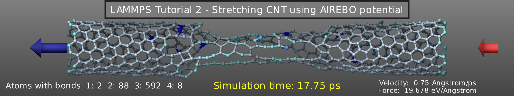
Example image using graphics objects and labels that are updated during the simulation.
Fix graphics/arrows
Fix graphics/arrows adds per-atom or per-chunk arrows to the visualization. The arrows represent some per-atom property or per-chunk 3-vector property. For atoms, there are the pre-defined properties force, velocity, and dipole (requires atom style dipole). Everything else would have to be computed in atom-style or compatible variables and use the variable keyword. For per-chunk properties, one needs to use the chunk keyword and provide the IDs of three computes: a chunk/atom compute and two per-chunk computes where the first defines the position of the (middle of the) arrow and the second the direction and length of the arrow. Popular choices would create per-molecule or per-bin chunks. Below is an example input section that computes and displays both, the total dipole moment (using fix graphics/objects and the per-molecule dipole moment as arrows in addition to the per-atom velocities:
compute molchunk all chunk/atom molecule
compute cpos all com/chunk molchunk wrap yes
compute cdip all dipole/chunk molchunk
fix vel all graphics/arrows 10 velocity 50.0 0.066 autoscale 0.25
fix vec all graphics/arrows 10 chunk molchunk cpos cdip 3 0.1
compute dip all dipole
variable scale equal 0.75
variable dip1x equal -v_scale*c_dip[1]
variable dip1y equal -v_scale*c_dip[2]
variable dip1z equal -v_scale*c_dip[3]
variable dip2x equal v_scale*c_dip[1]
variable dip2y equal v_scale*c_dip[2]
variable dip2z equal v_scale*c_dip[3]
fix dipole all graphics/objects 1 arrow 1 v_dip1x v_dip1y v_dip1z v_dip2x v_dip2y v_dip2z 0.3 0.2
dump viz all image 100 image-*.png element type size 600 600 zoom 1.3 view 70 20 shiny 0.1 &
bond atom 0.2 box yes 0.025 axes no 0.0 0.0 center s 0.5 0.5 0.5 fsaa yes &
fix dipole const 0 0 fix vec const 0 0 fix vel const 0 0 ssao yes 315465 0.8
dump_modify viz pad 6 boxcolor white backcolor gray element O H bdiam 1 0.2 &
adiam 1 0.5 adiam 2 0.3 acolor 1 silver acolor 2 red fcolor vec goldenrod &
fcolor dipole forestgreen ftrans dipole 0.75 fcolor vel cyan ftrans vel 0.5
Fix graphics/isosurface
Fix graphics/isosurface adds a triangulated surface following a given isovalue through a 3d-grid of data of some per-atom property. The data is spread out using a Gaussian distribution with a given width and can be just a value of 1 (leading to a grid representing the number density) or mass or some other computed per-atom property from a compute, fix, or atom-style variable. The isosurface can be represented by either a wireframe or a mesh of triangles and there are five choices for the resolution of the grid and thus the smoothness of the surface.
The commands below provide an example for how to use the graphics/isosurface fix to visualize the water and lipid bilayer of the “rhodo” benchmark example as isosurfaces by using a green wireframe and a transparent white triangle surface to represent those molecules.
group water type 4 33
group membrane type 36 37 38 39 40 41 42 43 44 45 46 47 48 49 50 51
group other subtract all water membrane
fix water water graphics/isosurface 100 30.0 3.0 quality high property mass
fix membrane membrane graphics/isosurface 100 25.0 4.0 quality low property mass
dump viz other image 100 image-*.png element type size 600 600 zoom 1.4641 view 80 10 &
shiny 0.2 fsaa yes bond atom type box yes 0.025 &
fix membrane const 2 0.33 fix water const 1 0.2
dump_modify viz pad 9 boxcolor silver backcolor gray &
fcolor membrane darkgreen ftrans membrane 1.0 ftrans water 0.5 &
element H H H H H H H H H C C C C C C C C C C C C C N N N N N N N O O O O S S &
H H H H H C C C C C C N O O O P Cl Na H H H N C C C C C C C C C C C &
adiam 1*9 1.92 adiam 10*22 2.72 adiam 23*29 2.48 adiam 30*33 2.432 adiam 34*35 2.88 &
adiam 36*40 1.92 adiam 41*46 2.72 adiam 47 2.48 adiam 48*50 2.432 adiam 51 2.88 &
adiam 52 3.632 adiam 53 2.176 adiam 54*56 1.92 adiam 57 2.48 adiam 58*68 2.72
{kind=link}
{kind=link}
Compute hbond/local
Compute hbond/local of the EXTRA-COMPUTE package provides access to the list of hydrogen bonds as they are dynamically computed by the compute style. These can be added to the dump image output as arrows pointing from the hydrogen bond hydrogen atom to the hydrogen bond acceptor atom by using the compute keyword. The compute provides a lot of flexibility in which atoms are considered for the hydrogen bonds so that the visualization can be rather simple and straightforward but also more complex to visualize only selected aspects.
For a simple bulk water system, one could just show the entire hydrogen
bond network and consider that the water oxygen atoms function as both,
hydrogen bond donors and hydrogen bond acceptors. Here is an example
input segment that could be added to the examples/rdf-adf/in.spce
input file:
group ogroup type 1
group hgroup type 2
compute hb all hbond/local 3.5 30.0 ogroup ogroup hgroup
dump viz all image 100 water-*.png element type size 600 600 zoom 1.331 view 70 20 &
shiny 0.2 ssao yes 348276 0.6 fsaa yes box yes 0.025 &
bond atom 0.35 compute hb const -0.5 0.15
dump_modify viz pad 6 boxcolor cadetblue backcolor darkgray backcolor2 silver element O H &
adiam 1 0.5 adiam 2 0.4 ccolor hb yellow
Note how the cflag1 parameter is used to shrink the arrows so that their tips just touch the hydrogen bond acceptor atoms.
If one wants to distinguish between donated and accepted hydrogen bonds
for a subsystem, the input could become more complex and multiple
computes may be needed. Below is an input that could be added to
examples/peptide/in.peptide input file. This selects a group of
atoms centered on the peptide and containing the peptide and a shell
of water molecules and uses different groups for hydrogen bond donors
and acceptors to determine selectively hydrogen bonds between the peptide
and the surrounding water molecules in both directions.
# select atoms for visualization: peptide and water molecules within 3.5 angstrom
group viz dynamic peptide within 3.5 include molecule every 100
# define groups of donor, acceptor, and hydrogen atoms for peptide and water
group pdonor type 5 9 # peptide donors : nitrogens and phenol oxygen
group woxygen type 13 # water oxygens are donor and acceptor
group pacceptor type 3 5 9 12 # peptide acceptors: oxygens, nitrogens, and sulfur
group hydrogen type 4 10 14 # hydrogens bonded to oxygens and nitrogens
# peptide-water hydrogen bonds where the peptide is the donor
compute hb1 all hbond/local 3.5 30.0 pdonor woxygen hydrogen
# peptide-water hydrogen bonds where the peptide is the acceptor
compute hb2 all hbond/local 3.7 30.0 woxygen pacceptor hydrogen
# create donor/acceptor hydrogen bond info text
fix label all graphics/labels 100 text "Hydrogen bonds donated: $(c_hb1:%02.0f)" 207 72 0.0 &
size 24 backcolor darkgray &
text "Hydrogen bonds accepted: $(c_hb2:%02.0f)" 210 30 0.0 &
size 24 backcolor darkgray
# create colored arrows to go with text labels
fix obj all graphics/objects 100 arrow 5 80.0 61.0 39 80.0 67.0 39 0.3 0.2 &
arrow 6 80.0 61.0 37.2 80.0 67.0 37.2 0.3 0.2
# combine the graphics into visualization using only a subset of atom
dump viz viz image 100 hbonds-*.png element element size 600 600 zoom 2.1 view 80 0 center s 0.5 0.52 0.52 &
bond atom 0.3 fsaa yes ssao yes 12384 0.6 shiny 0.1 box no 0.1 &
compute hb1 const -0.4 0.3 compute hb2 const -0.4 0.3 fix label const 1 0 fix obj type 0.0 0.0
dump_modify viz pad 5 boxcolor white backcolor darkgray backcolor2 silver &
element C C O H N C C C O H H S O H ccolor hb1 cyan ccolor hb2 magenta
{kind=link}
{kind=link}
Fix reaxff/bonds
Fix reaxff/bonds of the REAXFF package provides access to the list of bonds as they are dynamically computed by the ReaxFF pair style. As discussed above, this can be used to visualize bonds for a system where there is no explicit bond topology defined.
Fix smd/wall_surface
Fix smd/wall_surface of the MACHDYN package creates a custom wall from a mesh of triangles that is read from an STL format file.
MC package fixes
Several fixes from the MC package have support for adding graphics to a visualization. These are typically added spheres of the atoms that were swapped or involved in a bond that was created or broken. Below is an example for input commands that use both, fix bond/break and fix bond/create/angle. Atoms involved in a created bond are highlighted in red while atoms involved in a broken bond in yellow.
fix break all bond/break 500 1 2.5
fix form all bond/create/angle 500 1 1 2.2 1 aconstrain 90.0 180
variable nsteps index 500
fix label all graphics/labels ${nsteps} &
text "Step: $(step:%05.0f) Bonds created: $(f_form[2]:%02.0f) Bonds broken: $(f_break[2]:%02.0f)" 500 32 0 &
fontcolor black framecolor black
dump viz all image ${nsteps} breakable-*.png type type size 1000 400 zoom 8 shiny 0.1 fsaa yes &
bond atom 0.5 view 160 90 box no 0.0 ssao yes 238174 0.6 &
fix break const 0 1.5 fix form const 0 1.5 fix label const 1 0
dump_modify viz pad 6 backcolor white element C acolor 1 gray adiam 1 0.5 &
fcolor break goldenrod fcolor form firebrick
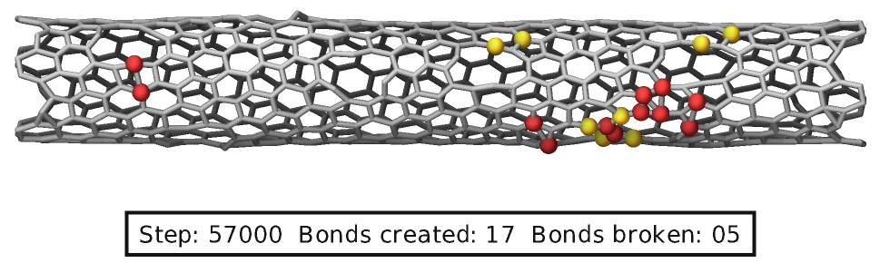